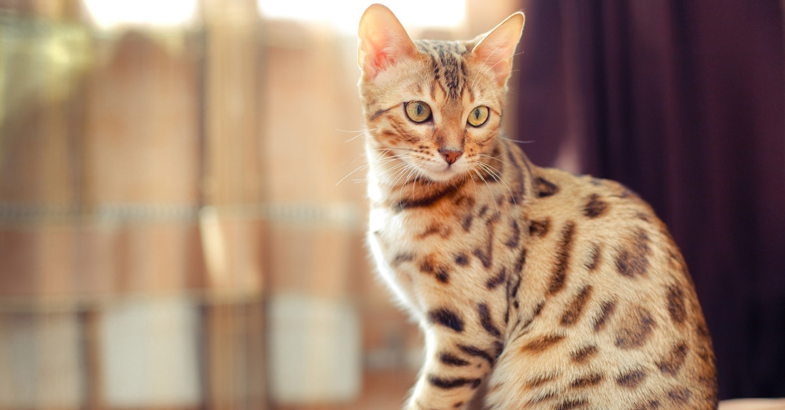

El comportamiento de tu perro
La definición de comportamiento canino comporta el conjunto de respuestas coordinadas (acciones e
inacciones) de perros domésticos (individualmente o en grupo) a estímulos internos o externos.
Como la especie animal domesticada más antigua que es, con una estimación de entre 9.000 y 30.000
años, el comportamiento de los perros ha sido inevitablemente conformado por milenios de contacto
con humanos. Como resultado de esta evolución social y física, los perros, más que otras especies,
han adquirido la capacidad de comprender y comunicarse con los humanos y están excepcionalmente en
sintonía con nuestros comportamientos.
Estudiosos del comportamiento, han descubierto un sorprendente conjunto de habilidades sociales y
cognitivas en el perro doméstico. Estas habilidades no se expresan en parientes caninos cercanos ni
en otros animales como los grandes simios, sino que, más bien, son paralelos a algunas capacidades
sociales y cognitivas de los niños.

La comunicación de tu gato
Maullido
El Acerca de este sonido maullido es el sonido típico que caracteriza a un gato. Es transcrito
onomatopéyicamente como «miau» o variantes similares. La pronunciación de esta llamada varía
significativamente dependiendo de su propósito. Usualmente vocalizan indicando sufrimiento,
solicitando atención humana (por ejemplo, para ser alimentados) o como un saludo. Algunos vocalizan
cuantiosamente, mientras que otros raramente lo hacen. Los gatos domésticos maúllan mucho más que
los salvajes ya que es una de sus formas de llamar la atención.
Ronroneo
El ronroneo indica generalmente que el animal está relajado y cómodo. También puede significar que
está angustiado, afligido o experimentando dolor, aunque el tono y el ritmo en estos casos es
distinguible del plácido ronroneo. Se produce por la exhalación del aire y la resonancia en su
cavidad torácica.
Puede ronronear y maullar simultáneamente, especialmente aquellos que vocalizan copiosamente. Al
mismo tiempo pueden parpadear lentamente o cerrar parcialmente sus ojos, indicando relajación.
Los gatos ronronean ante la presencia de sus dueños, otros gatos familiares, o cuando una madre se
encuentra con sus cachorros. También pueden modularlo para obtener comida, una conducta que se
observa frecuentemente.
Otros sonidos
Gato a la defensiva por la presencia de un perro: lo intimida arqueando el lomo, erizando su pelo y
bufando.
Cuando los gatos amenazan o luchan, emiten un repertorio de sonidos, gruñidos, bufidos, siseos,
gritos, llantos, a veces entremezclados y de tono e intensidad creciente.
La presentación entre tus mascotas
No existe una fórmula mágica a la hora de hacer las presentaciones entre perros y gatos. Todo
depende de cómo sean ambos individuos. Sin embargo, lo que siempre debe tenerse en cuenta es que los
primeros encuentros entre perro y gato tienen que ser controlados y bajo nuestra atenta supervisión.
Deben realizarse de forma progresiva y en un ambiente tranquilo y seguro. Según explican los
expertos, “Lo óptimo es que el perro esté en casa cuando llegue el gato, e incluso que aprovechemos
el transportín para dejar que lo olfatee con la seguridad de una jaula de por medio. Si vemos que el
gato se pone muy nervioso, es mejor cortar la situación y llevarlo a su refugio durante el tiempo
que necesite antes de estar preparado para el primer encuentro con nuestro perro.” La mayoría de las
veces, la introducción de un gato en una casa donde hay un perro no supone demasiados problemas. Sin
embargo, si detectamos cualquier atisbo de incompatibilidad en la convivencia entre perros y gatos,
lo mejor es consultar directamente con el veterinario para que nos recomiende un etólogo felino.
Cuanto antes intervengamos en la situación, antes podremos resolverla.